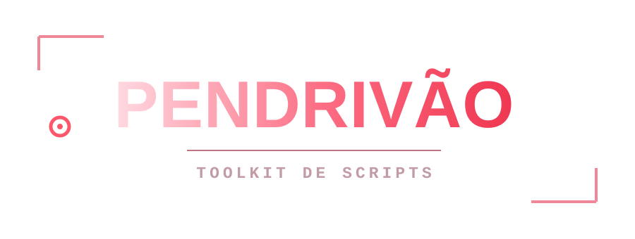
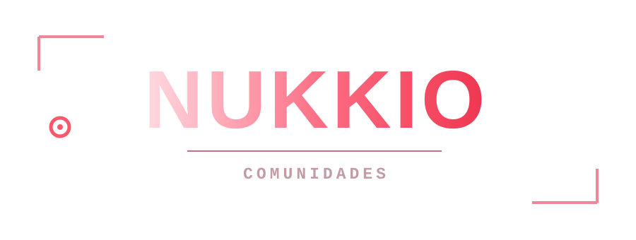

SEGURANCATCC PUBLICADO
Sinalyx
Sistema desenvolvido inicialmente como TCC em equipe para analisar logs do pfSense com modelos de detecção, regras e painel web.
ABRIR FICHA COMPLETAAqui estão os sistemas que desenvolvi e as ferramentas que uso para colocar ideias em prática. Cada projeto tem sua própria página com informações técnicas e limites conhecidos.
Sistema desenvolvido inicialmente como TCC em equipe para analisar logs do pfSense com modelos de detecção, regras e painel web.
ABRIR FICHA COMPLETA
PROJETO / FERRAMENTASUm kit de scripts para automatizar tarefas manuais de suporte e segurança básica.
ABRIR FICHA COMPLETA
PROJETO / APLICATIVORede social baseada em comunidades em desenvolvimento, com Flutter e API NestJS.
ABRIR FICHA COMPLETA